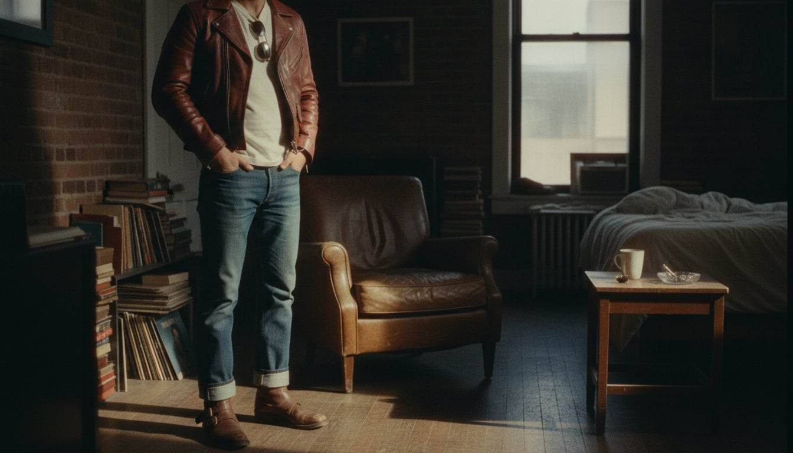

The Rebel
The look was fixed for good in 1953, when Marlon Brando pulled on a black Schott Perfecto motorcycle jacket for “The Wild One” and gave an entire decade of restless teenagers something to borrow from. James Dean did the same for denim two years later, and by the time Elvis Presley brought a pompadour and a curled lip to television, the pieces — leather, white tee, blue jeans, engineer boots — had assembled themselves into a uniform for anyone who wanted to look like the rules didn't apply to them, whether or not that was actually true.
The trademarks are simple because the point was always simple: asymmetrical zippers and a snap collar on the jacket, a plain white tee underneath doing the real work, jeans cuffed high enough to show the boot. Nothing about it needed accessorizing, because the whole outfit was already an accessory to an attitude.
It suits people who'd rather look a little dangerous than a little dull — who understand that the leather jacket's real function was never warmth, it was posture. There's an earnestness underneath the pose, though: this look has never once been about indifference to how you're perceived. It's about controlling exactly how.
- A black leather motorcycle jacket, asymmetrical zip, snap collar
- A plain white T-shirt, doing more work than it looks like
- Selvedge denim cuffed high enough to show the boot
- Engineer boots or motorcycle boots, buckled rather than laced
- A hairstyle with real ambition — the pompadour never fully left
The Leather Motorcycle Jacket
Schott NYC's Perfecto, created in 1928 and made famous by Marlon Brando in 1953's 'The Wild One,' set the template: an asymmetric zip (originally so the cold metal wouldn't sit against the rider's chest), a snap collar, and a belted waist.
Real leather construction, thinner hide than the heritage makers.
Shop this →Heavier horsehide, built to the wearer's own measurements.
Shop this →The Plain White Tee
The white T-shirt only became outerwear rather than underwear in the public imagination after Brando and James Dean wore it alone under a jacket — before that, showing a bare tee in public was itself mildly scandalous.
Heavier loopwheeled or combed cotton with a more considered fit.
Shop this →Reproduction 1950s construction on vintage loopwheel machines.
Shop this →The Cuffed Selvedge Denim
Cuffing the jean high enough to show both the boot and a flash of selvedge became standard practice once Japanese reproduction denim made the selvedge edge itself worth displaying rather than hiding.
Real or close-to-real selvedge at an accessible price.
Shop this →A specific vintage reissue cut close to the 1950s original.
Shop this →Heavyweight Japanese selvedge, some of the most obsessively made denim available.
Shop this →The Engineer Boot
Built originally for railroad engineers who needed a boot that could be kicked off quickly in an emergency, the buckled, strapped design became a biker staple for exactly the same practical reason.
Genuine strap construction at an accessible price.
Shop this →Built to order in the Pacific Northwest, resoleable indefinitely.
Shop this →Fully custom leather, last, and hardware.
Shop this →The Aviator Sunglasses
Originally designed for U.S. Army Air Corps pilots in 1936 to cut high-altitude glare, the teardrop aviator frame got its rebellious civilian afterlife largely through the same postwar biker and Hollywood culture that fixed the rest of this wardrobe in place.
The actual military-derived design, still made by the original licensee.
Shop this →American-made to actual military spec, supplied to the U.S. Air Force.
Shop this →Original glass-lens pairs from before the brand's production moved overseas.
Shop this →The leather jacket gets left on the bike, replaced by just the white tee and cuffed denim -- the boots stay on regardless of season.
A heavier shearling-lined version of the same leather jacket, thermal layers underneath the tee, and gloves built for actually gripping handlebars in the cold.
Leather handles light rain fine; for anything heavier, a waxed canvas layer goes over it, and the boots get treated beforehand rather than after.
The leather jacket generally stays parked along with the bike; a heavier flannel-lined denim jacket and insulated boots take over until the roads clear.
The leather jacket gets swapped for a simple black blazer over the same white tee, and the boots get polished rather than replaced -- this wardrobe dresses up reluctantly and briefly.
Route 66 taken seriously, not ironically, Sturgis for the rally, and small-town diners chosen over any chain, anywhere.
Jack Kerouac, Hunter S. Thompson, and motorcycle maintenance manuals read cover to cover more than once.
Elvis's early Sun Records output, rockabilly more broadly, and whatever's loudest on the jukebox in a bar that still has one.
A garage that's cleaner than the living room, band posters that predate the internet, and a record collection organized by memory rather than alphabet.
Motorcycle maintenance as genuine meditation, pool played for money, and a standing Friday night ritual that hasn't changed in years.